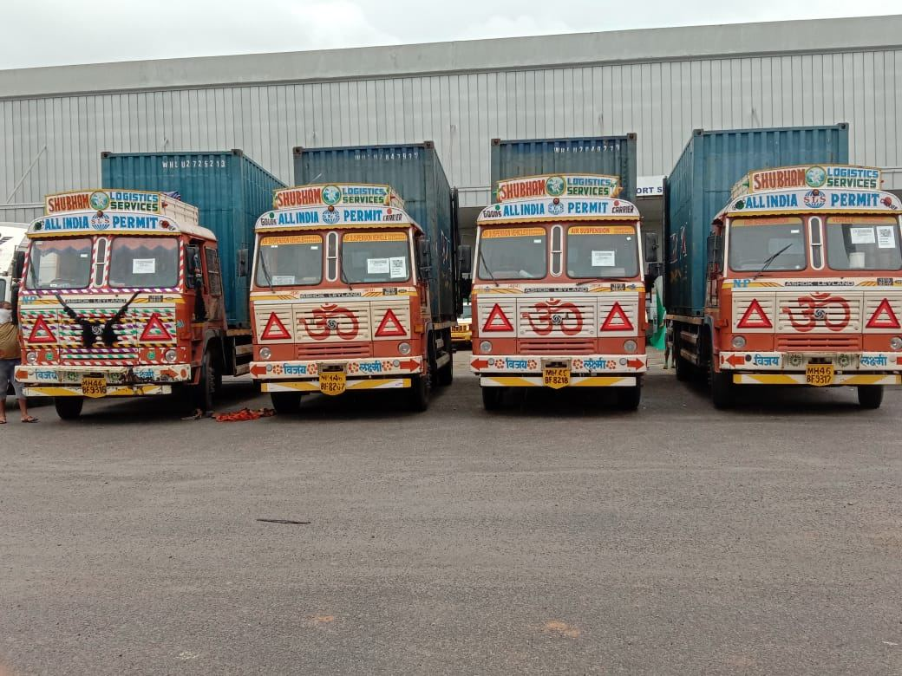
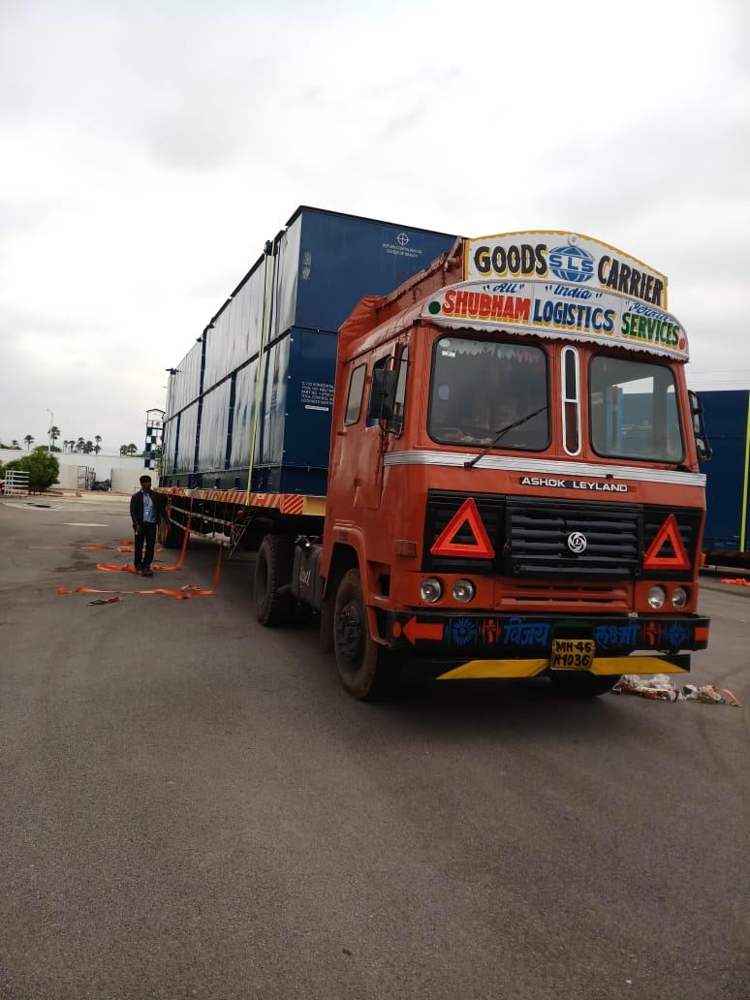

Shubham Logistics Services provides reliable container transport services for import and export cargo across India. We arrange container pickup, road transportation and delivery between ports, CFSs, ICDs, factories and warehouses.

Shubham Logistics Services manages road transportation for import and export container shipments. From port pickup to final delivery, each movement is coordinated according to the pickup location, destination and required schedule.
Our container transport service connects major ports with CFSs, ICDs, factories and warehouses through planned road movement.
Choose the movement required for your import, export or inland container shipment. Each movement is planned according to the pickup point, destination and delivery schedule.
Road transportation is available for 20ft and 40ft containers used for import and export cargo. The transportation arrangement is based on the container size, pickup point, destination and required delivery schedule.
Road transportation of 20ft containers between designated pickup and delivery locations for import and export cargo.
Road transportation of 40ft containers for import and export shipments according to the required route and delivery schedule.

Shubham Logistics Services supports container transportation from major ports to industrial and commercial destinations across India. Listed routes include movements involving Hyderabad, Mumbai, Chennai, Bangalore, Ahmedabad, Delhi NCR and Pune.
Share your shipment details and our team reviews the route, container requirements and delivery schedule before arranging the movement.
Provide the pickup location, destination, container size and shipment requirements.
Receive a route-specific transport quote based on the required movement.
Confirm the booking and arrange container pickup from the agreed location.
The container is transported to the destination and delivery is confirmed.
The cost of container transportation depends on the pickup and delivery locations, road distance, 20ft or 40ft container size, loaded or empty movement, and loading or unloading requirements.
Shubham Logistics Services uses GPS-enabled vehicle tracking to monitor container transportation during road transit. Pickup, transit and delivery updates help businesses plan receiving arrangements around the expected arrival of their shipment.
Shubham Logistics Services is a container transport company with 30+ years of logistics experience and a fleet of 60+ vehicles. We handle import and export container movements between major ports, CFSs, ICDs, factories and other cargo destinations.
Find clear answers about container transportation, pricing, booking, container sizes, major routes, port movement, CFS/ICD transportation and tracking.
Share your pickup location, delivery destination and container size. Our team will review the route and provide a transport quote.
Get a Container Transport Quote